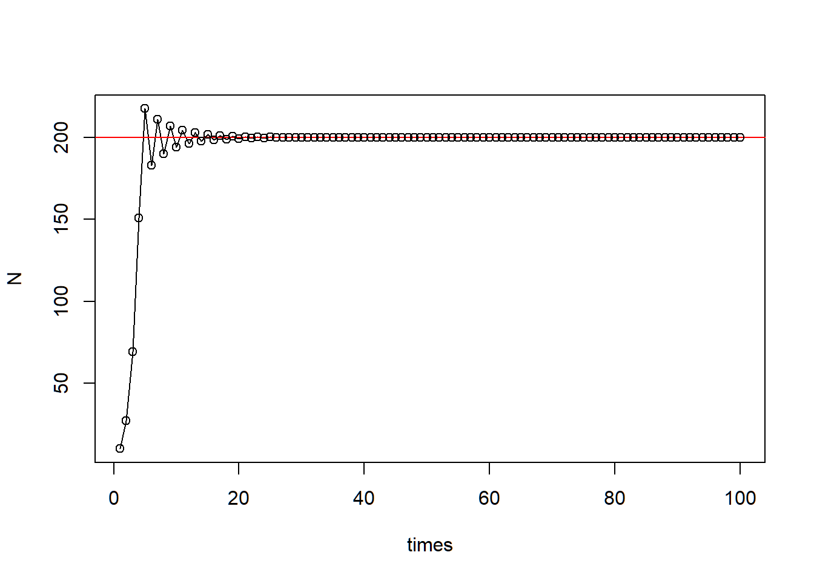

Week 4 - Discrete exponential and logistic models
Part 1 - Model the discrete logistic population growth using for loops Model: \[ N_{t+1} = N_t(1+r(1-\frac{N_t}{K})) \]
You may modify \(r\) to see the change in stability of equilibrium \(K\).
### (2) Set the parameters
r <- 1.8
K <- 200
N0 <- 10
time <- 100
Parms <- c(r = r, K = K)
### (3) Use for loop to iterate over the time sequence
pop_size <- data.frame(times = 1:time)
pop_size$N[1] <- N0
for(i in 2:time){
pop_size$N[i] <- log_fun(r = r, N = pop_size$N[i - 1], K = K)
}
### (4) Population trajectory
plot(N ~ times, data = pop_size, type = "l")
abline(h = K, col = "red")
points(N ~ times, data = pop_size)
Part 2 - Generic cobweb
###### Part 2: Generic cobweb
### (1) define function
ReturnMap <- function(Func, x0, times, xmax, curve_n = 1000, parms){
# get time series iteration
x <- rep(x0, times)
for(i in 2:times){
x[i] <- Func(x[i-1], parms)
}
# get fine grid for function curve
x.grid <- seq(0, xmax, length.out = curve_n)
y.grid <- Func(x.grid, parms)
ymax <- max(y.grid, xmax)
# create canvas
plot(NA, xlim = c(0, xmax), ylim = c(0, ymax), xaxs = "i", yaxs = "i", bty = "l",
xlab = expression(N[t]), ylab = expression(N[t+1]))
abline(a = 0, b = 1, lty = 2, col = "grey50")
lines(x.grid, y.grid, col = "steelblue", lwd = 2)
# cobweb (horizontal to diagonal, vertical up to function)
segments(x0 = x[1], y0 = 0, x1 = x[1], y1 = x[2], col = "firebrick")
for(i in 2:(times-1)){
segments(x0 = x[i-1], y0 = x[i],
x1 = x[i], y1 = x[i], col = "firebrick")
segments(x0 = x[i], y0 = x[i],
x1 = x[i], y1 = x[i+1], col = "firebrick")
}
}
### (2) Set up discrete logistic function with outside parameters
Logistic <- function(N, parms){
with(as.list(parms), {
return(N + r*N*(1-N/K))
})
}
Parms <- c(r = r, K = K)
### (3) Use the ReturnMap function
ReturnMap(Func = Logistic,
x0 = 10,
times = 150,
xmax = 310,
curve_n = 1000,
parms = Parms)
Here is a shiny app for the discrete logistic growth model.
Credit to Gen-Chang Hsu
Part 3 - Bifurcation
##### Part 3: Logistic map and bifurcation
### (1) Define the function
RickerPlot <- function(Func, variable, var_vec, x0, times, x_print = 200, parms){
# prepare saving space
data_plot <- data.frame(var = rep(var_vec, each = x_print), x = 0)
# change bifurcation parameter
for (k in 1:length(var_vec)){
parms[variable] <- var_vec[k]
x <- rep(x0, times)
# get time series with new bifurcation parameter
for(i in 2:times){
x[i] <- Func(x[i-1], parms)
}
# save the data
data_plot$x[(1 + (k - 1)*x_print):(k*x_print)] <- x[(times - x_print + 1):times]
}
# plot
plot(x ~ var, data = data_plot, cex = 0.05, pch = 20,
xlab = variable, ylab = "Population size")
}
#### Discrete logistic function with outside parameters
Logistic <- function(N, parms){
with(as.list(parms), {
return(N + r*N*(1-N/K))
})
}
### (2) Parameter setting
Parms <- c(r = r, K = K)
r_seq <- seq(from = 1.8, to = 3, by = 0.001)
### (3) Use generic ricker plot function
RickerPlot(Func = Logistic,
variable = "r",
var_vec = r_seq,
x0 = 10,
times = 500,
x_print = 100,
parms = Parms)